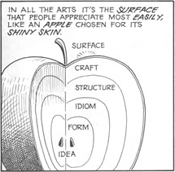

For Christmas I received a copy of Scott McCloud’s Understanding Comics. I was familiar with his work only from his web comics (the I Can’t Stop Thinking series is particularly good), but never read his books. Turns out, it’s excellent. Probably best enjoyed if you’ve read comics, but I think there’s some good stuff in there for everyone.
McCloud’s “6 steps” (Idea/Purpose, Form, Idiom, Structure, Craft, and Surface) can be applied to many pursuits outside comics. To master the artform you need to progress through each of those steps, but often a comics fan decides he wants to “be a comic book artist.” He starts copying the surface qualities of the work (“look, I can draw Superman”), but rarely does he delve into it enough to go back to the other foundation steps: having a unique idea or purpose for the work, and understanding the form and structure of the medium enough to produce something great.
Building software is not all that unlike creating a traditional work of art. (Odd that I’m including comics in “traditional” art, but there you go.) Crafting the user interface, thinking through the design, layering one piece on top of another. And above all, keeping in mind the problem being solved. It can be creative work, if you approach it that way.
Maybe that is one of the reasons why Cocoa is so successful. By putting the emphasis on up-front user interface design while simplifying some of the coding with a mature object-oriented framework, it opens up application design and implementation to more people. In a sense, allowing people to jump directly to Scott McCloud’s step number 6 (“Surface”, in this case Aqua goodness), and then work their way backwards as they mature as software developers — if they choose to.
What a difference two years made to Brent Simmons:
Oct 2000: “So much of my work is UI work. The command line is a vacation.”
Oct 2002: “I love UI programming.”
Joel likes Tintin comics.